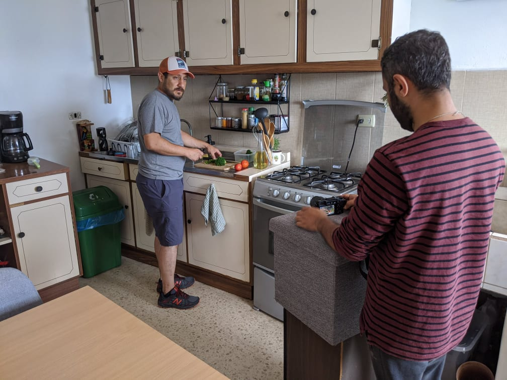
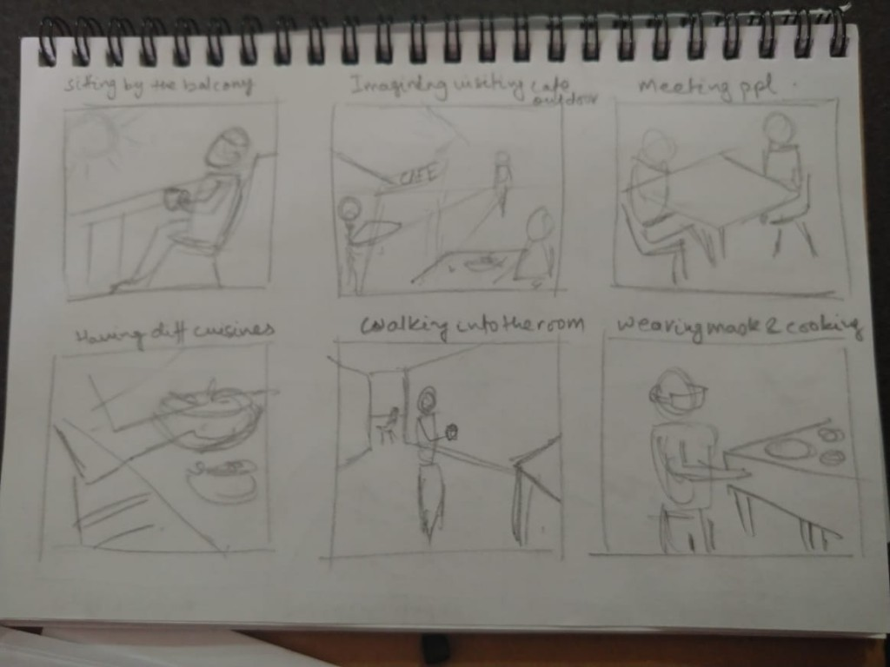
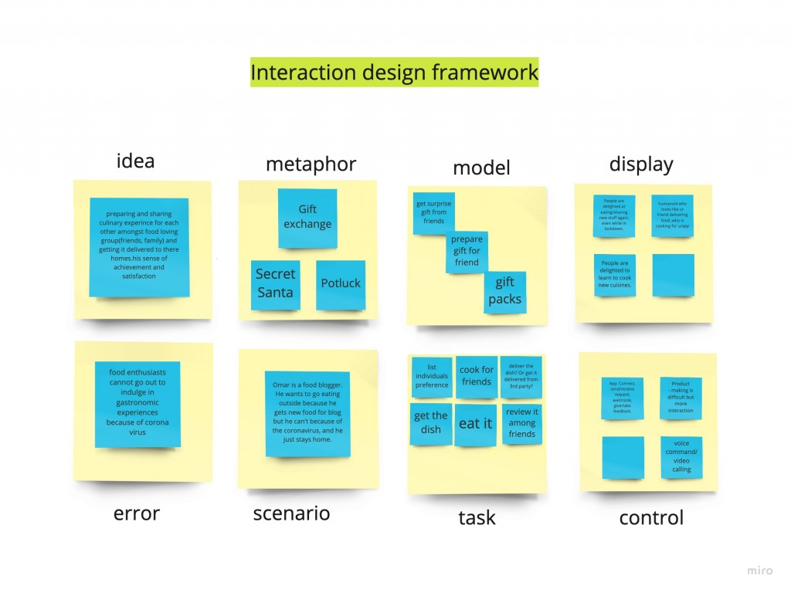

Gastro
Gastro – Your Social Food Network
Gastro connects people who have a common love for food, by creating a social network through food. It is designed for people who are bored with making food for themselves every day, trapped in the confines of their homes during the COVID-19 pandemic.

The Product
A voice and gesture controlled IoT device that sits on your kitchen table, contains a microchip that integrates with your social media account, where it selects your friends within the serviceable area. Gastro being a two-party interaction system with one being the requester and other being the cook.
Two hours before the selected meal time, the requester can select from a list of cuisines through AI enabled gestures. A simple hand swipe over Gastro is a ‘Reject and Proceed’ and a high-five is a ‘Confirm’. A confirmation is followed by search operation in the social network and matching the selected cuisine with the preferred cook who is cooking the same cuisine and connecting both individuals to start a conversation.
The Cook, when registering on Gastro specifies his expertise at dishes and cuisines. The algorithm matches the Requester with the Cook if the cuisines match. The cook receives the request and can prepare any dish from the cuisine. The pickup and delivery of food are taken care of by Gastro personals.
The Social Element
The Element of surprise is the exact dish from the cuisine which gets revealed only when the food is delivered. Through a simple sharing of meals, we reconnect individuals in this difficult time over their shared passion for food thereby initiating a new bond between them.
